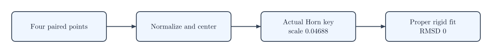
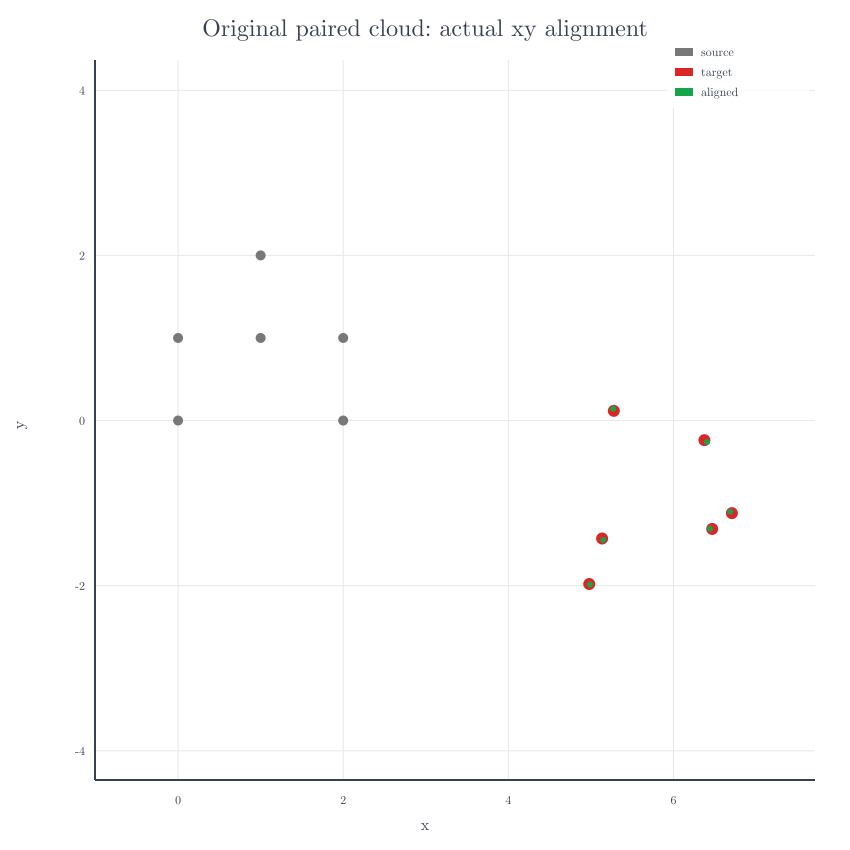
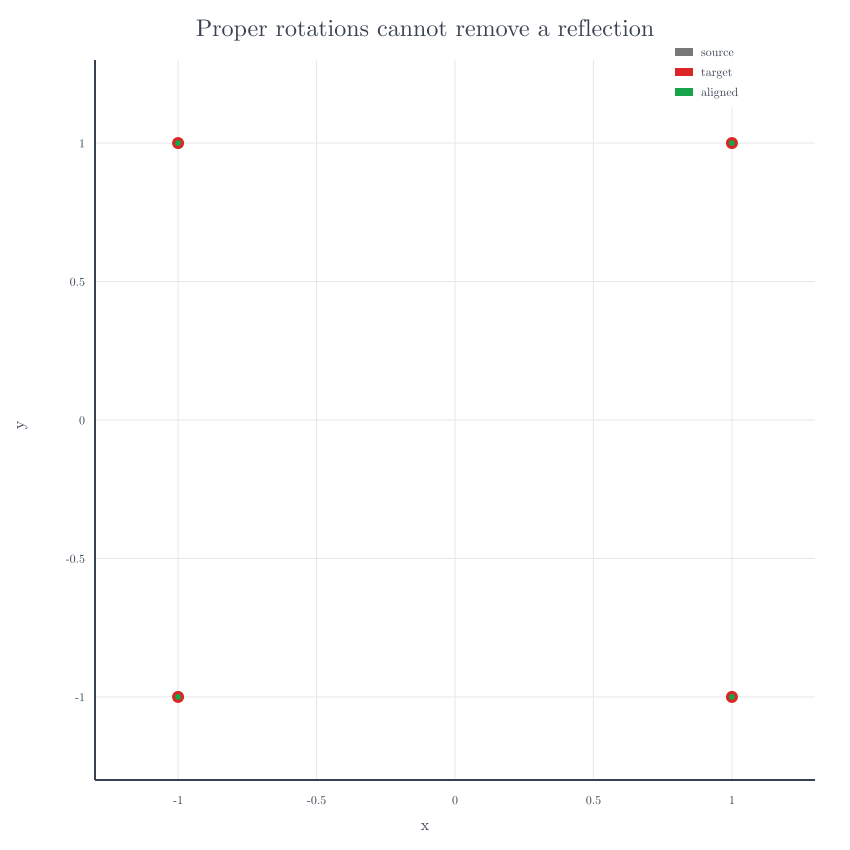
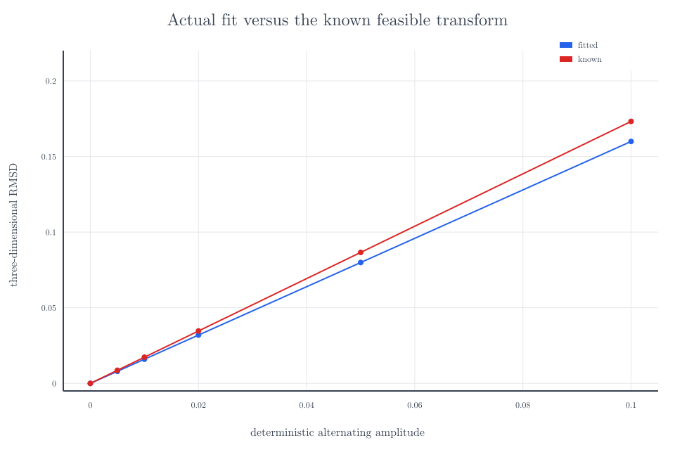

Kabsch alignment through the producing quaternion eigensystem
Abstract
Rigid alignment maps corresponding source points to targets using a proper rotation and translation. The native implementation uses Horn's quaternion formulation of Kabsch's least-squares objective. We begin with an exact synthetic transform, retain the original six-point forty-degree noisy example, and inspect actual centroids, covariance, key matrix and principal eigenvector. Degenerate and reflected controls expose uniqueness and proper-rotation limits. Returned three-dimensional residuals, not an xy projection alone, measure fit.
See the producing stages on four points
Rotate a tetrahedral cloud ninety degrees about z, then translate by (1,2,3). Correspondence is known and fixed by input order. The following native analysis captures the actual covariance and principal eigensystem used to form the returned transform. The diagram summarizes these producing stages; it is not a trace of Jacobi iteration steps or a second fit.
#include <dm/dm.hpp>
int main() {
std::filesystem::create_directories("build");
const std::vector<dm::algorithms::Point3> s = {{0, 0, 0}, {1, 0, 0},
{0, 1, 0}, {0, 0, 1}};
std::vector<dm::algorithms::Point3> t;
for (auto p : s)
t.push_back({-p[1] + 1, p[0] + 2, p[2] + 3});
const auto a = dm::algorithms::kabsch_analyze(s, t);
std::print("| coordinate | source centroid | target centroid | fitted translation |\n| ---: | ---: | " "---: | ---: |\n");
for (int i = 0; i < 3; ++i)
std::print("| {} | {:.9f} | {:.9f} | {:.9f} |\n", i,
a.source_centroid[i], a.target_centroid[i],
a.result.translation[i]);
std::print("\n| component | actual quaternion | actual eigenvalue |\n| ---: | ---: | ---: |\n");
for (int i = 0; i < 4; ++i)
std::print("| {} | {:.12f} | {:.12f} |\n", i, a.quaternion[i],
a.eigenvalues[i]);
std::print("\nActual RMSD {:.12e}; principal eigen residual {:.12e}.\n",
a.result.rmsd, a.eigen_residual);
dm::graphics::Diagram d;
d.node("pairs", {0, 0}, "Four paired points").node("center", {5, 0},
"Normalize and center").node("key", {10, 0}, std::format("Actual Horn key\nscale {:.4g}", a.covariance_scale)).node("fit", {15, 0}, std::format("Proper rigid fit\nRMSD {:.3g}", a.result.rmsd)).edge("pairs", "center").edge("center", "key").edge("key", "fit").save_svg("build/kabsch_stages.svg");
}| coordinate | source centroid | target centroid | fitted translation |
|---|---|---|---|
| 0 | 0.250000000 | 0.750000000 | 1.000000000 |
| 1 | 0.250000000 | 2.250000000 | 2.000000000 |
| 2 | 0.250000000 | 3.250000000 | 3.000000000 |
| component | actual quaternion | actual eigenvalue |
|---|---|---|
| 0 | 0.707106781187 | 3.000000000000 |
| 1 | 0.000000000000 | -0.333333333333 |
| 2 | 0.000000000000 | -0.333333333333 |
| 3 | 0.707106781187 | -2.333333333333 |
Actual RMSD 0.000000000000e+00; principal eigen residual 3.252606517457e-19.

Derive translation, then rotation
For fixed rotation R, differentiating the squared residual loss gives the optimal translation t=target_mean−R source_mean. Let centered source and target points be x and y. With H=sum(x y transpose), the remaining objective is
Horn's scalar-first unit quaternion q expresses trace(RH) as q transpose N q for a symmetric four-by-four key matrix N. Maximizing this Rayleigh quotient selects its largest-eigenvalue eigenvector. Normalizing q yields a proper rotation with determinant +1, rather than an unrestricted reflection. The native Jacobi eigensolver supplies the actual eigenpair; its residual is checked, and the principal gap is reported as a diagnostic. A small or zero gap can indicate nonuniqueness but is not an exact rank certificate.
The kernel independently scales each dataset by its maximum absolute coordinate or one, centers and accumulates mean covariance in long double, then divides that covariance by its largest absolute entry for the key construction. These positive scalar normalizations preserve the exact objective's optimizing rotation; they do not fit an extra scale. They reduce raw overflow, but floating arithmetic and the eigensolver remain approximate and platform-dependent.
Retain the original six-point experiment
The original source coordinates, forty-degree Rodrigues rotation about normalized (1,1,1), translation (5,−2,1) and alternating amplitude .02 are preserved by native fixture helpers. Its perturbations are deterministic (+n,−n,+n) with alternating n, not independent Gaussian noise. The table reports the actual returned rotation, translation and each three-dimensional residual. The figure uses equal xy coordinate scales; it can hide errors in z.
#include <dm/dm.hpp>
int main() {
std::filesystem::create_directories("build");
const auto s =
dm::algorithms::kabsch_demo_source(), t =
dm::algorithms::kabsch_demo_target();
const auto a = dm::algorithms::kabsch_analyze(s, t);
std::print("| row | R0 | R1 | R2 | translation |\n| ---: | ---: | ---: | ---: | ---: |\n");
for (int i = 0; i < 3; ++i)
std::print("| {} | {:.12f} | {:.12f} | {:.12f} | {:.12f} |\n", i,
a.result.rotation[i][0], a.result.rotation[i][1],
a.result.rotation[i][2], a.result.translation[i]);
std::print("\n| original pair | target x | target y | target z | actual residual norm |\n| ---: | ---: " "| ---: | ---: | ---: |\n");
for (std::size_t i = 0; i < s.size(); ++i)
std::print("| {} | {:.12f} | {:.12f} | {:.12f} | {:.12e} |\n", i,
t[i][0], t[i][1], t[i][2], a.residual_norms[i]);
std::print("\nRMSD per three-dimensional point {:.12e}; key eigen gap {:.12e}.\n",
a.result.rmsd, a.eigen_gap);
dm::algorithms::kabsch_xy_plot(a).title("Original paired cloud: actual xy alignment").save_svg("build/kabsch_original.svg");
}| row | R0 | R1 | R2 | translation |
|---|---|---|---|---|
| 0 | 0.849627496923 | -0.284322424768 | 0.444177751860 | 4.989524324208 |
| 1 | 0.441371829732 | 0.844334143869 | -0.303793945653 | -1.987194041326 |
| 2 | -0.288659010585 | 0.454159236690 | 0.842861414076 | 0.991897661080 |
| original pair | target x | target y | target z | actual residual norm |
|---|---|---|---|---|
| 0 | 4.980000000000 | -1.980000000000 | 0.980000000000 | 1.685293213052e-02 |
| 1 | 6.708059257492 | -1.121802429777 | 0.433743172285 | 3.224981557632e-02 |
| 2 | 6.374930843635 | -0.237772801031 | 0.842841957397 | 4.518481169010e-02 |
| 3 | 5.277772801031 | 0.117158042603 | 1.625069156365 | 2.992060104067e-02 |
| 4 | 5.135970371254 | -1.429098785111 | 2.273128413857 | 2.715344786866e-02 |
| 5 | 6.469098785111 | -1.313128413857 | 2.864029628746 | 3.354302442204e-02 |
RMSD per three-dimensional point 3.194637621270e-02; key eigen gap 3.171762051848e+00.

Reflection and degeneracy are different limits
A singleton has no rotation information; translation alone fits it. A line constrains some rotations but leaves rotation about its axis undetermined. Repeated identical points are similarly nonunique. These are accepted finite problems, with one numerical optimum returned. A reflected full-dimensional cloud cannot generally be mapped exactly by a proper rotation. The tetrahedral reflection below has a positive least-squares residual even though an improper reflection would fit perfectly.
#include <dm/dm.hpp>
int main() {
std::filesystem::create_directories("build");
const std::vector<dm::algorithms::Point3> s = {{1, 1, 1}, {1, -1, -1},
{-1, 1, -1}, {-1, -1, 1}};
auto t = s;
for (auto &p : t)
p[0] = -p[0];
const auto reflection = dm::algorithms::kabsch_analyze(s, t);
std::print("| control | pairs | RMSD | eigen gap |\n| --- | ---: | ---: | ---: |\n");
const auto show =
[](const char *name, const dm::algorithms::KabschAnalysis & a) {
std::print("| {} | {} | {:.12e} | {:.12e} |\n", name, a.source.size(),
a.result.rmsd, a.eigen_gap);
};
show("reflected tetrahedron", reflection);
show("singleton", dm::algorithms::kabsch_analyze({{0, 0, 0}}, {{1, 2, 3}}));
show("translated line",
dm::algorithms::kabsch_analyze({{0, 0, 0}, {1, 0, 0}, {2, 0, 0}},
{{1, 2, 3}, {2, 2, 3}, {3, 2, 3}}));
bool empty = false, mismatch = false, cap = false;
try {
(void) dm::algorithms::kabsch({}, {});
} catch (const std::invalid_argument &) {
empty = true;
}
try {
(void) dm::algorithms::kabsch({{0, 0, 0}}, {});
} catch (const std::invalid_argument &) {
mismatch = true;
}
try {
(void) dm::algorithms::kabsch_analyze(s, t, 3);
} catch (const std::length_error &) {
cap = true;
}
if (!empty || !mismatch || !cap ||
std::abs(reflection.result.rmsd - 2) > 1e-10)
throw std::runtime_error("fit controls");
std::print("\nEmpty/mismatched inputs and a one-short complete pair ceiling reject.\n");
dm::algorithms::kabsch_xy_plot(reflection).title("Proper rotations cannot remove a reflection").save_svg("build/kabsch_controls.svg");
}| control | pairs | RMSD | eigen gap |
|---|---|---|---|
| reflected tetrahedron | 4 | 2.000000000000e+00 | 0.000000000000e+00 |
| singleton | 1 | 0.000000000000e+00 | 0.000000000000e+00 |
| translated line | 3 | 0.000000000000e+00 | 0.000000000000e+00 |
Empty/mismatched inputs and a one-short complete pair ceiling reject.

Profile the deterministic perturbation amplitude
Using the original known rotation and translation without refitting gives residual norm sqrt(3) times amplitude at every pair. A least-squares rigid refit can improve on that feasible transform, but its RMSD is not an estimate of an independent noise standard deviation here. Each row below runs the actual fit; the reference curve is the known-transform residual for this specifically constructed perturbation.
#include <dm/dm.hpp>
int main() {
std::filesystem::create_directories("build");
std::vector<double> x, fit, known;
std::print("| alternating amplitude | actual fitted RMSD | known-transform residual | principal eigen " "residual |\n| ---: | ---: | ---: | ---: |\n");
for (double amplitude : {0., .005, .01, .02, .05, .1}) {
const auto a =
dm::algorithms::kabsch_analyze(dm::algorithms::kabsch_demo_source(),
dm::algorithms::kabsch_demo_target(
amplitude));
const double reference = std::sqrt(3.) * amplitude;
if (a.result.rmsd > reference + 1e-11)
throw std::runtime_error("feasible transform objective");
std::print("| {:.3f} | {:.12e} | {:.12e} | {:.12e} |\n", amplitude,
a.result.rmsd, reference, a.eigen_residual);
x.push_back(amplitude);
fit.push_back(a.result.rmsd);
known.push_back(reference);
}
auto p = dm::graphics::RPlot::create();
p.line(x, fit, "fitted", {37, 99, 235}, 2).points(x, fit, "", {37, 99, 235},
4).line(x, known, "known",
{220, 38, 38}, 2).points(x, known, "", {220, 38, 38}, 4).title("Actual fit versus the known feasible transform").x_label("deterministic alternating amplitude").y_label("three-dimensional RMSD").y_limits(-.005, .22).save_svg("build/kabsch_profile.svg");
}| alternating amplitude | actual fitted RMSD | known-transform residual | principal eigen residual |
|---|---|---|---|
| 0.000 | 1.896066778761e-16 | 0.000000000000e+00 | 2.108550677064e-19 |
| 0.005 | 7.984608436709e-03 | 8.660254037844e-03 | 1.954866896716e-19 |
| 0.010 | 1.597053572843e-02 | 1.732050807569e-02 | 2.178176145371e-19 |
| 0.020 | 3.194637621270e-02 | 3.464101615138e-02 | 2.701384480864e-19 |
| 0.050 | 7.990629171867e-02 | 8.660254037844e-02 | 1.609630061647e-19 |
| 0.100 | 1.599505759147e-01 | 1.732050807569e-01 | 2.608861477543e-19 |

All inputs must be finite, equal-sized and nonempty. Produced nonfinite values or outputs outside finite double range throw; finite conversion may underflow to zero. The captured aligned coordinates are rounded to double after widened transform application, while captured residual norms precede that coordinate rounding. Recomputing errors from the stored aligned coordinates can therefore differ in last bits. The returned double transform itself is used when computing RMSD.
The scalar fit uses linear work and constant auxiliary storage apart from fixed four-by-four eigensolver allocations. Analysis additionally owns the original pairs, aligned points and residual norms, with linear copied/output storage. Its default complete cap is one million paired records, checked after input validation and before copies; zero disables the optional cap. This count does not describe the several output vectors, byte/capacity overhead or peak RAM. Native plotting has a separate complete-pair ceiling and finite padded-span domain. No external dataset is forced into this controlled alignment experiment.
Independent NumPy SVD, symmetric eigensystems and residual calculations checked
100 noisy rigid fits across scales 1e-150, 1 and 1e150, including the actual
covariance, Horn matrix, eigenvalues and proper rotation. Another 100 ordinary
fits matched the frozen original within the stated numerical tolerance; native
controls include reflections, degeneracy and ownership. The shared ten-report
build passed 131 native tests, 38 directly instrumented
address/undefined-behaviour sanitizer tests, 89 compiled public examples,
documentation coverage for all 388 scoped definitions and ten representative
clangd hovers. All four complete C++ report programs executed successfully and
their native figures were visually reviewed. Batch receipts are retained under
build/mepml-conversion/batch-174-183/.
References
Wolfgang Kabsch (1976), “A solution for the best rotation to relate two sets of vectors”, Acta Crystallographica A32, 922–923, doi:10.1107/S0567739476001873. Berthold K. P. Horn (1987), “Closed-form solution of absolute orientation using unit quaternions”, JOSA A4, 629–642, doi:10.1364/JOSAA.4.000629. The implementation follows the quaternion formulation for a proper rigid transform, without Horn's optional scale estimation.